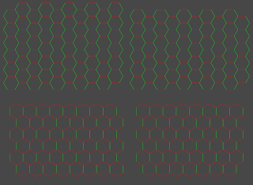

Hex grid drawing - finally!
Category: progress
Tags: old-blog
I have finished the drawing part for hex grids. As I mentioned before, there are many ways to draw hex grids and I want to cover as many of them as possible. Let's count all the possibilities that work now.
There are three plains to draw on, the XY-, XZ- and YZ-plain. In each case you have the choice of having pointy sides or flat sides, those are two possibilities. Every second line is offset upwards, so you can either draw those offsets or keep the grid compact, so two more choices. Each grid can begin with an offset column or not (two more) and end with an offset column or not (again, two more). That's a total of 3 x 2 x 2 x 4 = 48 possibilities! On top of that no line should be calculated more than once, or else it would be drawn twice. That may seem trivial, but if your lines are semi-transparent the difference between lines drawn once and twice can be seen.
Needless to say I don't want to write and maintain 48 similar algorithms, everything has to be handled automatically by one single function. Eventually I got it, it works with any of those possibilities. I've prepared four variations of the same grid to give you an idea. The upper ones are the pointy sides, the lower ones are the flat sides. The left ones are fully drawn, the right ones are compact.

There are also other ways to draw a hex grid, as a rhombus, a triangle or a big hexagon made from smaller hexagons. I will do them after I have the scripting functionality done, drawing is independent from the other calculations.